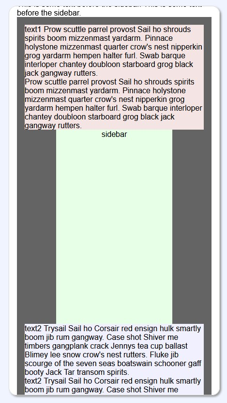
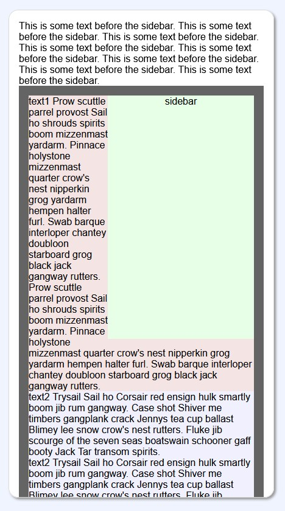

Changing Text Flow Around a Sidebar
When Resizing the Window
When Resizing the Window
Problem
We want a sidebar to be on the right side of the page, but when the page gets narrow (say on a mobile device), then we want the sidebar to tuck under the text.
wide window: sidebar on the right

narrow window: sidebar in between
The first element in the DOM has a red background.
The sidebar element has a green background.
The third element has a blue background.
These three elements are encompassed within a dark grey container for illustration purposes.
Text with a white background follows after that.
Using a simple css float style on the green sidebar does not work since the float element must appear before the first (red) text element in the DOM to be able to float to the right of it.
But for the mobile layout, the sidebar element must be after the red element in the DOM. Then it appears under the first (red) text element.

narrow window: sidebar failing to tuck under the red
Solution
The flexbox allows us to change the order of elements using theorder: field. We can use float when the window is
wide, and then change the parent of the sidebar to be a
flexbox. Then we can change the order of the elements:
/* detect narrow */
@media screen and (max-width: 600px) {
.sidebarAndTextSection {display:flex; flex-direction: column;}
.text1 {order: 1;}
.sidebar {align-self: center; order: 2;}
.text2 {order: 3;}
}
Here is a demo of the solution:
flow using float and flex